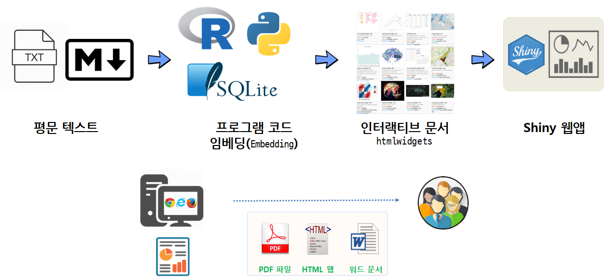

Computational Documents
데이터 과학 문서

학습목차
- 인코딩, 글꼴
- 현대적인 과학논문 저작
RStudio워드 프로세서:hunspell- R마크다운 콘텐츠: 웹사이트, 블로그, 포트폴리오 등
- 대쉬보드(Dashboard)
- Computational Documents Tutorial
- R 마크다운
- Parameterized Documents
- 전문가 제작 문서
- 인터랙티브 문서
- \(\LaTeX\)
PDF문서 - R마크다운 코드 덩어리(Code Chunk)
- Compendium … R 프로젝트: (특정 주제에 대한) 개요서
- 데이터 과학 개발운영 아키텍처
- 파이썬 빌드 doit
- 출판사, 저널, 논문 API
- \(\LaTeX\)
원문 출처 및 저작 라이선스
이 번역의 원작 “Modern Scientific Authoring”은 과학 컴퓨팅을 위한 소프트웨어 교육을 추진하는 소프트웨어 카펜트리 재단에서 개발하여 공개한 교재에 영감을 받아 준비 되었다. 이 교재는 크리에이티브 커먼스(Creative Commons)의 저작자표시(BY, Attribution), 동일조건변경허락(SA, Share-Alike) 라이선스https://creativecommons.org/licenses/by-sa/2.0/kr/를 준용합니다.
xwMOOC 오픈 교재
- 컴퓨팅 사고력(Computational Thinking)
- 데이터 과학
- R 데이터과학
- 시각화
- Computational Document
- 데이터 과학– 기초 통계
- 보안 R - TBA
- 다양한 데이터
- 텍스트 - 자연어처리(NLP)
- 네트워크(network)
- 공간통계를 위한 데이터 과학
- 고생대 프로젝트
- 금융(finance)
- 자동차 데이터 분석
- 비즈니스 프로세스(Business Process) - bupar
- 모형
R 팩키지통계적 사고
- 빅데이터
- 기계학습, 딥러닝, 인공지능
- IoT 오픈 하드웨어(라즈베리 파이)
- 선거와 투표